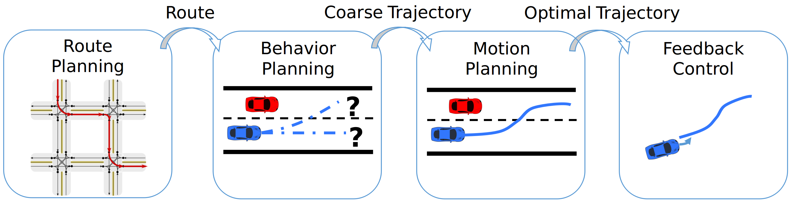

规划¶
规划模块简介¶
自动驾驶管道包含从感知到控制的多个组件。该管道的核心是“规划模块”，负责制定有关车辆运动的战略和战术决策。该模块分为三个关键阶段：路线规划、行为规划和运动规划，以不同的粒度和精度水平规划车辆的运动。在这篇文章中，我们将深入探讨每个阶段。

路线规划 ¶
目标¶
路线规划阶段的任务是找到从当前位置到所需目的地的最有效路线，就像传统 GPS 导航系统的操作方式一样。现代路线规划算法能够在一次性预处理步骤后实时返回大规模的最佳路线 [1] 。如需更全面的了解，请查看 Bast 等人的论文 [2]。
输入¶
路线规划阶段将有关世界的高级信息作为输入，例如：
- 起点和终点的坐标；
- 道路网络的拓扑结构；
- 交通状况；
- 可能的永久性障碍。
输出¶
路线规划阶段生成一条路径或一系列连接起点和目的地的路径点作为输出，同时避开任何永久性障碍。
挑战¶
道路规划模块在计算最有效的路线时必须考虑许多挑战，例如
- 适应不断变化的道路状况；
- 纳入实时交通详细信息；
- 确保所选路线既安全又高效。
行为规划¶
目标¶
行为规划阶段的主要任务是规定车辆的总体行为，从车道变换、超车、让路到转弯的决策。如今，行为规划模块通常包含自我车辆与道路上其他代理（例如其他车辆）之间的交互 [3]。
输入¶
为了实现其目标，行为规划阶段使用来自多个来源的信息，例如
- 根据路线规划得到的指定路线；
- 有关邻近车辆和行人的数据（来自激光雷达、雷达、摄像头等）；
- 交通灯信息；
- 其他相关环境数据。
输出¶
行为规划的输出包括宏观指令，例如“移至左车道”、“跟踪前方车辆”或“准备右转”以及反映这些指令的粗略轨迹。
挑战¶
在做出决策时，行为规划阶段需要解决多个问题，例如
- 预测周围司机和行人的意图和即将采取的行动；
- 在复杂的场景中采用安全的决策制定；
- 处理不常见的边缘情况。
运动规划¶
目标¶
规划模块工作流程的最后一个阶段是运动规划，其目的是绘制一条对车辆来说既安全又一致的轨迹，反映行为目标并保持在车辆的动态和运动学约束范围内 [1]。
输入¶
为了使车辆产生平滑的轨迹，运动规划需要多种类型的数据，例如
- 行为规划所确立的预期行为；
- 当前车辆状态（如位置、速度、加速度）；
- 道路地图的详细信息；
- 有关动态障碍物的数据。
输出¶
运动规划阶段的结果是优化的轨迹，详细说明了车辆在指定时间范围内的状态。
挑战¶
为了产生这样一个优化的轨迹，运动规划面临着多重挑战，例如
- 制定避免碰撞且精简的轨迹；
- 管理来自传感器的噪声和不确定数据；
- 实时轨迹映射。
示例¶
参考文献¶
- Paden, Brian, et al. "A survey of motion planning and control techniques for self-driving urban vehicles." IEEE Transactions on intelligent vehicles 1.1 (2016): 33-55.
- Bast, Hannah, et al. "Route planning in transportation networks." Algorithm engineering: Selected results and surveys (2016): 19-80.
- Ding, Wenchao, et al. "Epsilon: An efficient planning system for automated vehicles in highly interactive environments." IEEE Transactions on Robotics 38.2 (2021): 1118-1138.